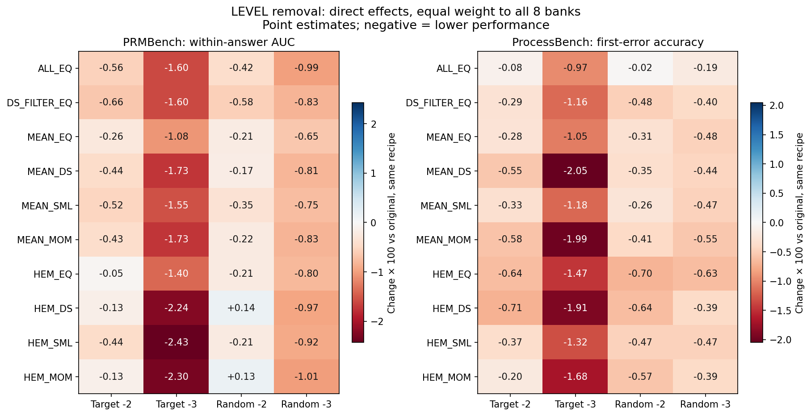
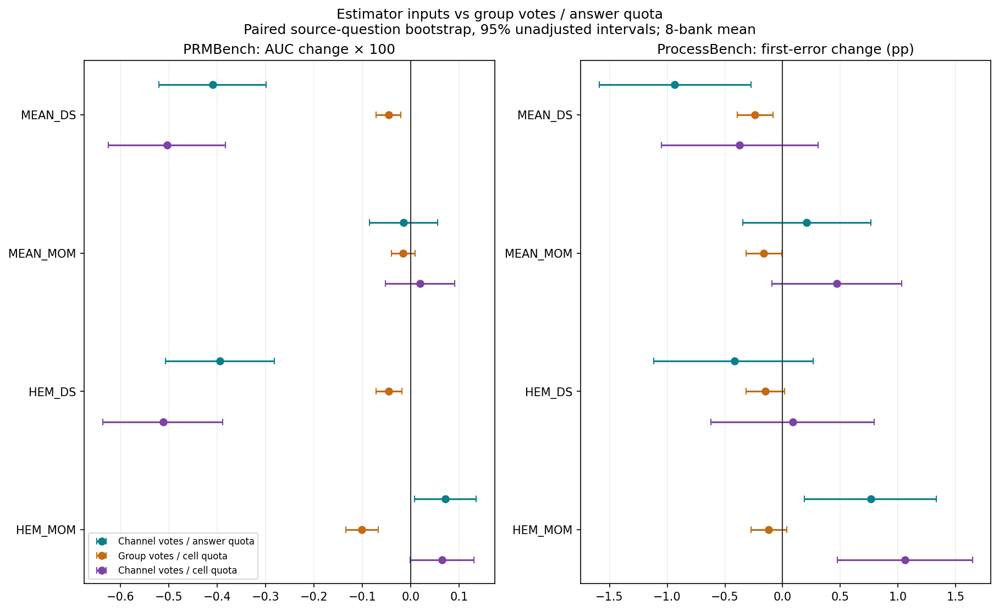
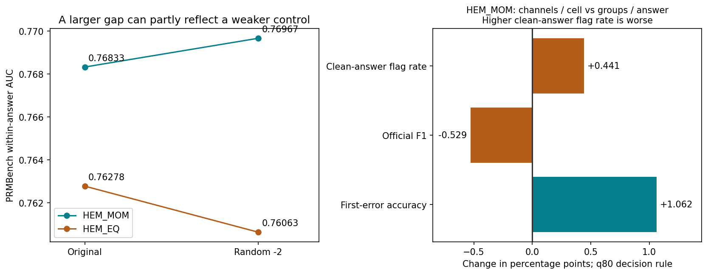

4 באוקטובר 2026 · ניתוח עצמאי של התוצאות השמורות · כל הנתונים נתוני פיתוח שכבר נחשפו
עיקר הביקורת על בחירת ה״זוכים״ מוצדק. עם זאת, אין בסיס למסקנה גורפת ששינוי קלט האומדנים אינו מועיל: ההשפעה תלויה במתכון ובמדד. השמטת ההשוואות הישירות וערבוב בקרות הבחירה הן טעויות בניתוח המקורי. שינוי העוגן והדירוג לאחר תקנון לתשובה, לעומת זאת, היו חלק מהתוכנית שאושרה.
נבדקו 2,232 קבצים מול hashes חתומים ונחזרו 6,480 ערכי מדדים. ההפרש המרבי הוא 3.33×10⁻¹⁶. בוצעו 20,000 דגימות bootstrap מזווגות לפי שאלת מקור, עם אותן דגימות בין בנקים ומתכונים. PRMBench: 6,030 תשובות כשירות ל־AUC, 707 קבוצות מקור; ProcessBench: 4,442 תשובות שגויות משני המודלים, 2,842 קבוצות מקור באוכלוסיית הדגימה. השקלול שווה לשמונת הבנקים ולשמונת תאי ProcessBench.
גבולות הבדיקה: הצבירה העצמאית התחילה ממדדים ותוצאות שמורים לכל תשובה; לא שחזרתי כאן ציוני צעדים מפיצ׳רים גולמיים, ולא הרצתי מחדש את בדיקת ערבוב התוויות של קלוד. הקבצים המקוריים לא שונו. רווחי הסמך החדשים הם ניתוח חקרני לאחר הביקורת.
| טענה | מסקנת הבדיקה | ראיה והשלכה |
|---|---|---|
| המספרים שחושבו תקינים | אושר בהיקף הבדיקה הנוכחית | 6,480 צבירות חוזרות מתוך תוצאות לתשובה; סטייה מרבית 3.33e−16. זו אינה הרצה חוזרת מהפיצ׳רים הגולמיים. |
| אין להציג את random_2 כשיטה שנבחרה מראש | מסכים | הוגדר כבקרה בתוכנית. קובץ הפרוטוקול לא החריג במפורש את זכאותו לבחירה, והקוד הכניס אותו: עמימות שלא היה צריך לנצל לקידום בקרה. בפועל 12 מתוך 30 מועמדים אקראיים, לא 40 מתוך 40. |
| הסרה מכוונת משנה גם עוגן | העוגן השתנה, אך בדיקת ההמשך לא מצאה השפעה שלו על הסימן | תיקון בעקבות שאלת עמרי: העוגן אינו קובע את החלוקה. ב־720 התאמות SML לא הפך סימן כלל; ב־720 התאמות MoM הכיוון זהה לכיוון לפי סכום חיובי ולפי רוב חיובי. לכן אין כרגע ראיה שהחלפת העוגן מסבירה את הירידה. ראו ANCHOR_CLARIFICATION_20261004.json. |
| השאלות הישירות של הניסויים לא נותחו | מסכים: השמטה בניתוח המקורי | ההשוואות הישירות נוספו כאן, באותו מתכון מול גרסת המקור. הניתוח המאוחר מסומן כחקרני ולא כרישום מראש. |
| הסרת LEVEL פוגעת כמעט תמיד | אושר בהערכות הנקודתיות | כל 20 השוואות ההסרה המכוונת ב־PRMBench שליליות; כל 40 השוואות ההסרה ב־ProcessBench שליליות. לא כל רווח סמך שולל אפס. שתי החריגות החיוביות ב־PRMBench הן HEM בבקרת random_2. |
| שינוי קלט האומדנים אינו מוסיף דבר | הכללה רחבה מדי | נכון שאין שיפור גורף. נמצאו שיפורים ב־HEM_MOM ובאיתור שגיאה ראשונה, לצד ירידה ב־F1. העדר מובהקות אינו הוכחת שוויון. |
| כלל הבחירה מערבב בקרות | מסכים: פגם בקוד הבחירה | DS_FILTER_EQ מוכנס עם יתרון אפס, ואילו משקולים מדורגים מול EQ קבוצתי תואם. יש לתקן את ההגדרה בגרסה חדשה; לא לשכתב SELECTION קפוא. |
| המכסה התאית כמעט אינה משנה דבר | אושר חלקית בלבד | ממוצע הסימונים בתשובות תקינות כמעט אינו משתנה. היסטוגרמות הן של תשובה×עמודה, ולא מאפשרות למדוד כמה תשובות שלמות נותרו ללא סימון. קיימות השפעות מותנות קטנות על הביצועים. |
| השילוב מחבר את שני הזוכים העצמאיים | לא זה המימוש | הקוד בוחר את קלט האומדנים בכפוף למתכון LEVEL: random_2/HEM_MOM עם channels_answer/HEM_MOM. הוא כולל BASE, LEVEL_ONLY, INPUT_ONLY ו־COMBINED. אין בכך הוכחה שכדאי לקדם אותו. |
| אף שיטה אינה עוברת Step 457 | יש לדווח, ולהפריד בין כללי הבחירה | לא נמצאה שיטה העוברת את הכלל ההיסטורי. המשתמש ביקש לדווח עליו לצד כלל ממוצע 8 הבנקים. הפיכתו לתנאי וטו תהיה שינוי נוסף בתוכנית, שאינו נובע מעצם הממצא. |
| הריצה נעצרה לפני LR והשוואות מתחרים | אושר | 26/648 יחידות מיקום והחלטה; LR, שילוב והשוואות PRM ו־Mind the Gap טרם הושלמו. אין לבחור כלל החלטה על סמך החלק המצומצם. |
כל מספר הוא הפרש מול הבקרה הישירה, כפול 100; בסוגריים רווח 95% לא מתוקן. ב־AUC אלו נקודות בסולם 0–100, ובדיוק אלו נקודות אחוז. אין לערבב בין שני המדדים.
| השוואה | PRMBench: AUC | ProcessBench: דיוק השגיאה הראשונה |
|---|---|---|
| ממוצע כל הערוצים: הסרה מכוונת של 2 | -0.561 [-0.650, -0.474] | -0.084 [-0.397, +0.231] |
| ממוצע אחרי סינון: הסרה מכוונת של 3 | -1.601 [-1.744, -1.460] | -1.158 [-1.639, -0.688] |
| HEM_MOM: בקרת הסרה אקראית של 2 | +0.134 [+0.065, +0.202] | -0.570 [-1.038, -0.095] |
| MEAN_DS: הצבעות ערוצים במקום קבוצות | -0.409 [-0.520, -0.298] | -0.937 [-1.590, -0.273] |
| HEM_MOM: הצבעות ערוצים במקום קבוצות | +0.072 [+0.008, +0.135] | +0.764 [+0.191, +1.330] |
| HEM_MOM: ערוצים ומכסה תאית במקום קבוצות ומכסה לתשובה | +0.065 [-0.001, +0.131] | +1.062 [+0.475, +1.644] |
| MEAN_MOM: מכסה תאית במקום מכסה לתשובה, בהצבעות ערוצים | +0.033 [+0.016, +0.051] | +0.262 [+0.106, +0.418] |
ב־HEM_MOM, מעבר מקבוצות ומכסה לתשובה לערוצים ומכסה לתא מעלה את דיוק השגיאה הראשונה ב־1.062 נקודות אחוז; גם רווח מתוקן ל־40 ההשוואות באותו ניסוי ובאותו מדד נשאר חיובי: [0.118, 2.062]. ה־AUC ב־PRMBench אינו מראה שיפור מובהק באותה השוואה. תחת כלל q80, F1 יורד ב־0.529 נקודות אחוז ושיעור הדגלים בתשובות תקינות עולה ב־0.441. לשני המדדים האחרונים חושב הפרש נקודתי בלבד בבדיקה זו.
התיקון הוא Bonferroni חקרני בתוך כל משפחת ניסוי ומדד בנפרד, לא תיקון משותף לכל המדדים במחקר. אומדן זנבות רווחים מתוקנים על בסיס 20,000 דגימות הוא קירוב. כל 192 שורות ההשוואה, לרבות הרווחים המתוקנים, נמצאות ב־CSV.

בכחול שיפור ובאדום ירידה. אלו ממוצעים על כל שמונת הבנקים, ולא טענה שכל בנק או כל רווח סמך שליליים. גם ALL_EQ ו־DS_FILTER_EQ, שאינם תלויים בעוגן של החלוקה, נפגעים. לכן שינוי העוגן אינו יכול להסביר לבדו את כל הירידה.
SVG
הבקרה בכל הנקודות היא אותו מתכון עם הצבעות קבוצות ומכסה לתשובה. הקווים הם רווחי 95% לא מתוקנים. MEAN ו־HEM מתארים את השקלול בתוך הקבוצות; DS ו־MoM את האמידה למשקול בין הקבוצות.
SVG
ב־random_2, HEM_MOM עצמו משתפר ב־0.001341 AUC, ובמקביל HEM_EQ נחלש בכ־0.002147. לכן נכון שחלק מהגדלת היתרון נובע מהחלשת הבקרה; לא נכון שכל ההגדלה נובעת מכך. זו עדיין תצפית בבקרה אקראית, ולא הצדקה להכתיר שיטה שנבחרה מראש. ב־ProcessBench אותה הסרה אקראית מורידה את דיוק השגיאה הראשונה בכ־0.570 נקודות אחוז.
SVG| גרסה | סימונים בממוצע לתשובה×עמודה תקינה | יחידות תשובה×עמודה עם אפס סימונים |
|---|---|---|
| channels_answer | 3.277 | 0.000% |
| channels_cell | 3.229 | 3.925% |
| groups_answer | 3.277 | 0.000% |
| groups_cell | 3.221 | 0.297% |
ממוצע שווה של הבנקים ושל MEAN/HEM; 934 תשובות תקינות ב־PRMBench. ההיסטוגרמות השמורות מאגדות עמודות. לכן 0.3%–4% אינם שיעור התשובות התקינות ללא שום דגל בכל הערוצים יחד. אי אפשר לחשב את השיעור הזה מההיסטוגרמות לבדן. התוצאות תומכות בטענה שהעברת המכסה כמעט אינה מקטינה את כמות הסימונים הממוצעת בתשובות תקינות; הן אינן מודדות כמה ביטים התחלפו או מוכיחות שהקלט נשאר זהה.
המשך טכני: נדרש תחילה מקום בדיסק; בתחילת בדיקה זו היו כ־27MB בלבד. הריצה נותרה STOPPED. לא נמחקו קבצים ולא חודשו הרצות. יש לשמור את התוצאות והפרוטוקולים הקפואים ולהוציא תיקון ניתוח בגרסה חדשה. רק אחרי השלמת שכבות ההחלטה, LR ובחירת מתכון ניתן להשלים את ניתוח המתחרים על אותו מתכון.
השוואות ישירות ורווחי סמך · מדדים מוחלטים · בדיקת העוגנים · יחידות הסימונים · היקף הבדיקה ו־hashes · קוד הבדיקה · יצירת הדוח
תיקון ובדיקת השפעת העוגן בעקבות שאלת עמרי · דוח קלוד · תוכנית העבודה · פרוטוקול LEVEL · פרוטוקול קלט האומדנים
הענף שנבדק: codex/monday-fusion-analysis-20261003, HEAD 8a485642e. ריצה מחדש של recheck.py דורשת את קובצי המקור המקומיים; render_review.py משתמש רק בקובצי הבדיקה כאן. התרשימים כאן הם ניתוח ביקורת משלים, ואינם תחליף להשלמת F1–F12 של הניסוי.